CLIENT CASE 01
WeThru 고객 제작 사례
ikki archive
좋은 작업은 이미 있었습니다.
고객이 한 번에 볼 수 있는 곳이 없었을 뿐입니다.
- Client
- ikki archive
- Industry
- 공간 디자인 · 플랜테리어
- Location
- 부산
- WeThru Scope
- 전략 정리
- 정보 구조
- 카피
- 웹 디자인
- 개발
- 상담 동선
본 페이지는 WeThru의 고객 제작 사례를 소개하는 Case Study입니다.
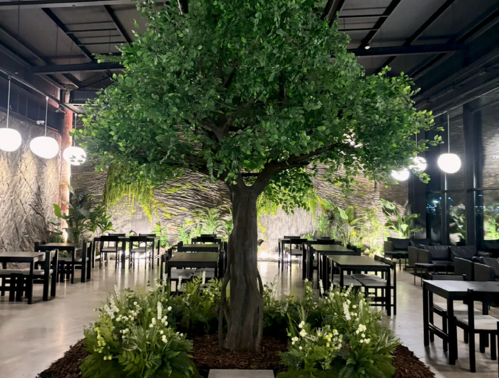
01 / CLIENT
ikki archive는 어떤 업체인가
공간 디자이너 출신이
직접 설계하고 시공하는,
부산의 플랜테리어 업체.
부산에서 실내조경과 이끼정원, 행잉 작품을 만듭니다. 카페와 주거공간, 전시 부스까지 공간의 성격에 맞춰 설계하고, 시공 전에는 3D 시안으로 먼저 맞춰 봅니다.
- 하는 일
- 실내조경, 이끼정원, 행잉 작품
- 작업 지역
- 부산, 경남, 울산
- 시공 전
- 3D 시안으로 먼저 맞춰 봅니다
- 수상
- 2017 한국공간디자인 공모전 동상
- WeThru와의 관계
- WeThru의 고객사입니다. 공간 작업과 사진은 모두 ikki archive의 것이고, WeThru는 그것을 웹사이트로 정리했습니다.
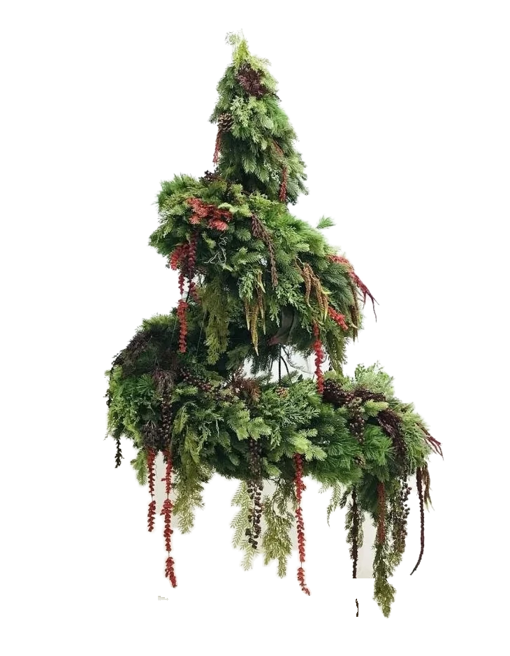
02 / BEFORE
기존에 가지고 있던 것
있었지만,
흩어져 있던 것.
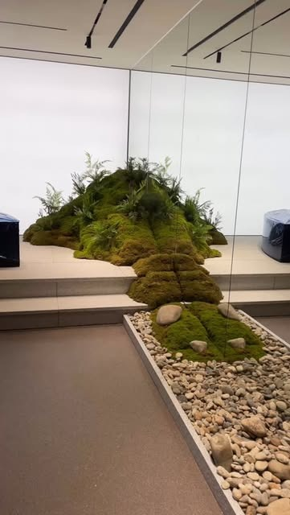
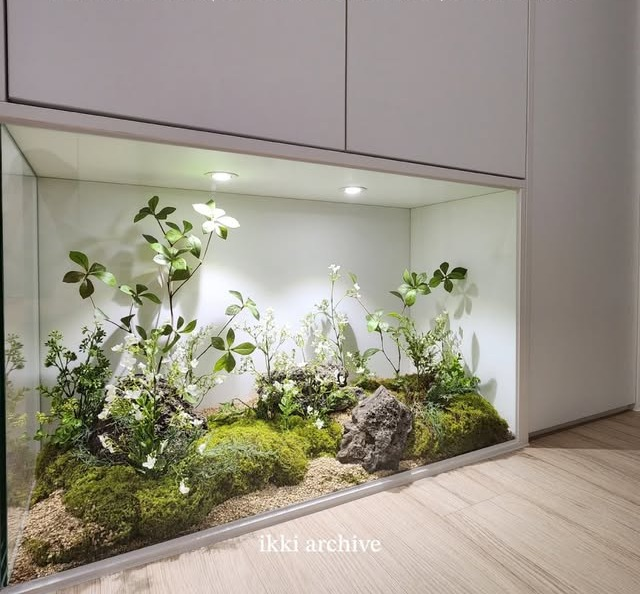
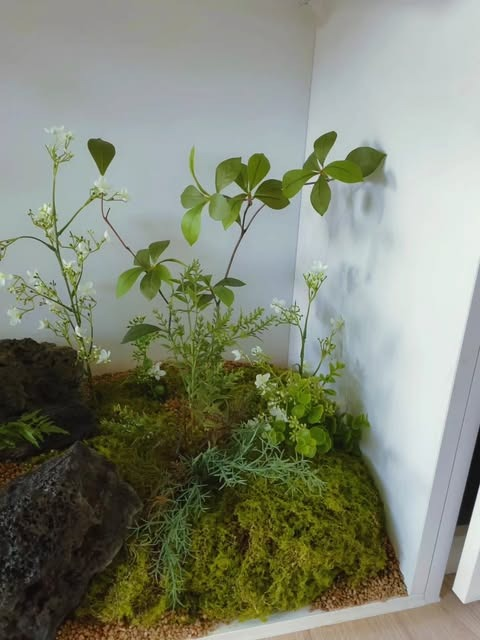
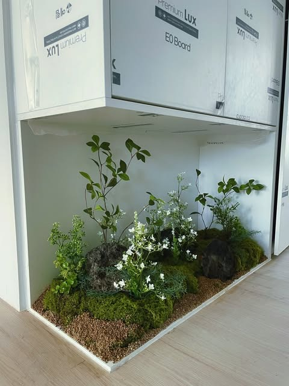
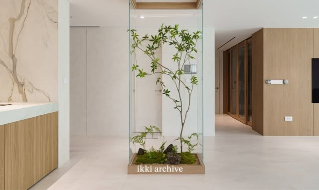
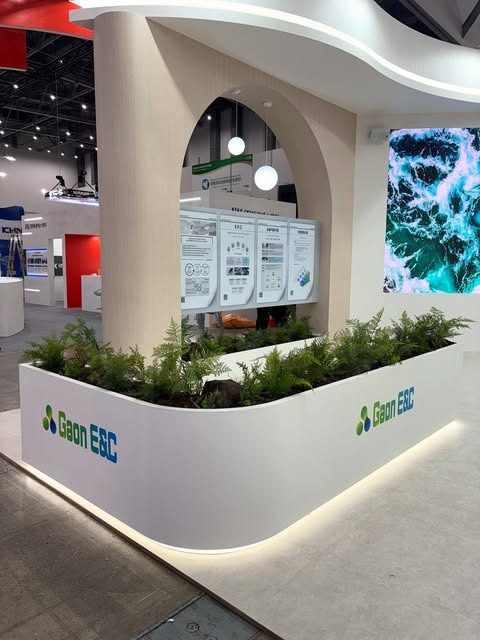
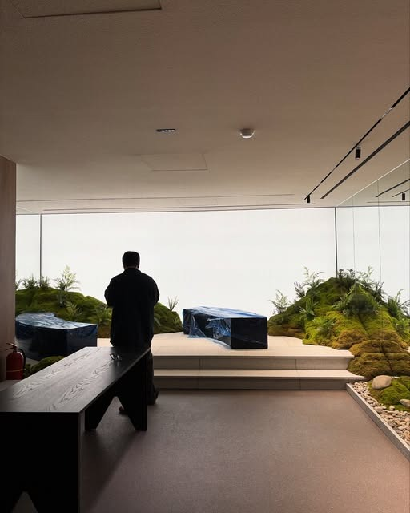
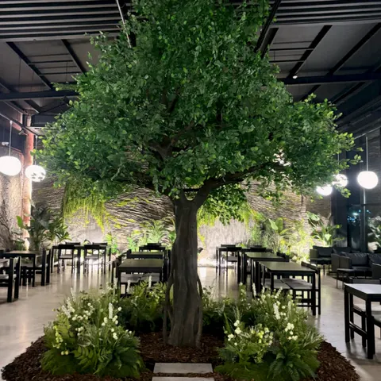
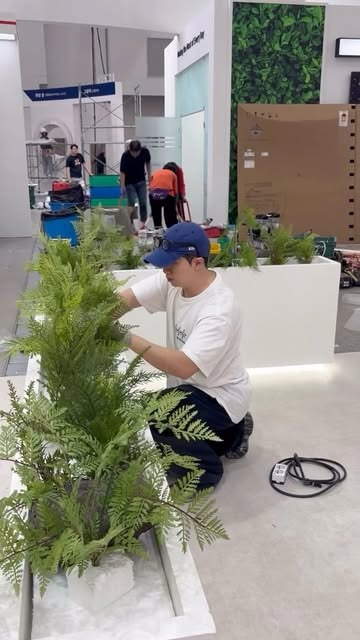
“공간 디자이너 출신이
직접 설계하고 시공합니다.”
- 작업 지역
- 부산, 경남, 울산
- 시공 전
- 3D 시안으로 먼저 맞춰 봅니다
- 수상
- 2017 한국공간디자인 공모전 동상
대표의 디자인 철학과 경력고객이 처음 보는 화면에서는 잘 드러나지 않던 이야기.
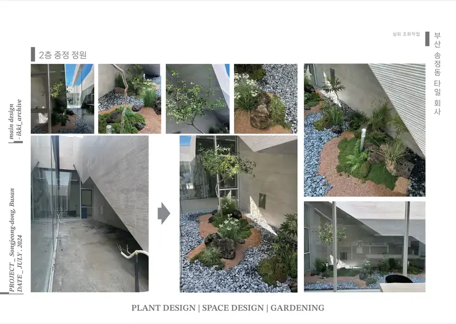
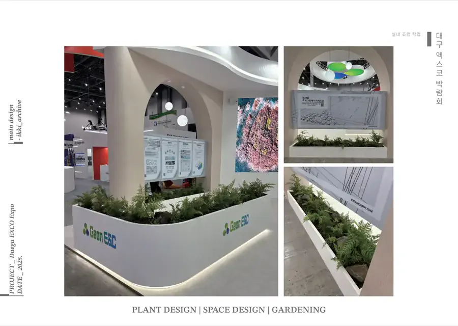
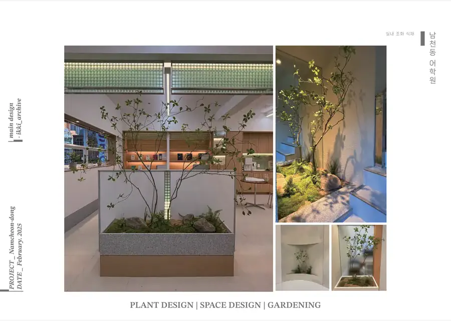
- 송정동 대형 카페2026카페
- 동래구 카페2025카페
- 경남 양산 주거공간2025주거
- 울산 주거공간2025주거
- 대구 엑스코 제2전시장2025전시
프로젝트 경험카페, 주거공간, 전시 부스. 지역도 공간 유형도 다른 현장들이 각자의 기록으로 남아 있었습니다.
하나하나는 충분했습니다.
다만 한 곳에 모여 있지 않았습니다.
03 / PROBLEM
무엇이 문제였나
좋은 작업은 있었지만,
처음 보는 고객이 그 차이를
한 번에 이해하기 어려웠습니다.
처음 보는 고객의 입장에서
최신 게시물부터 보입니다. 가장 자신 있는 작업이 아래로 내려갈 수 있습니다.
결과물은 보이지만, 누가 어떤 기준으로 설계했는지는 사진만으로 알기 어렵습니다.
무엇을 준비해서 어떻게 상담을 시작하면 되는지 한눈에 보이지 않습니다.
04 / WETHRU APPROACH
WeThru가 한 일
새로 만들기 전에,
있는 것부터 읽었습니다.
| 단계 | WeThru가 한 일 | 사이트에 남은 것 |
|---|---|---|
| Understand대표와 사업 이해 | 대표의 배경과 작업 방식, 주로 하는 공간과 지역을 먼저 파악했습니다. 고객이 이 업체를 고르는 이유가 어디에 있는지부터 봤습니다. | “공간 디자이너 출신이 직접 설계하고 시공합니다.”소개 첫 문장 |
| Organize프로젝트와 정보 정리 | 사진과 게시물, 포트폴리오 문서를 프로젝트 단위로 묶고 지역·연도·공간 유형을 붙였습니다. | 시공 사례 10건부산, 양산, 울산, 대구 |
| Build고객 관점의 구조와 카피 설계 | 처음 보는 고객이 보는 순서대로 첫 화면, 프로젝트, 소개, 과정, 문의를 배치하고 각 화면의 문장을 썼습니다. | 사이트 구조와 화면별 카피문의 전에 준비할 자료 안내 포함 |
| Show자사 포트폴리오로 구현 | 휴대폰과 PC에서 열리는, 업체 이름의 사이트로 디자인하고 개발해 공개했습니다. | ikkiarchive.comikki archive가 운영하는 실제 사이트 |
05 / BEFORE → AFTER
흩어진 자료가 사이트의 어디로 갔나
네 곳에 흩어진 자료가,
한 사이트의 순서가 되었습니다.
BEFORE
- 사진
- 포트폴리오 문서
- 대표 이야기
AFTER · ikkiarchive.com
- 01Hero
- 02Projects
- 03About
- 04Process
- 05Contact
- 06상담 동선
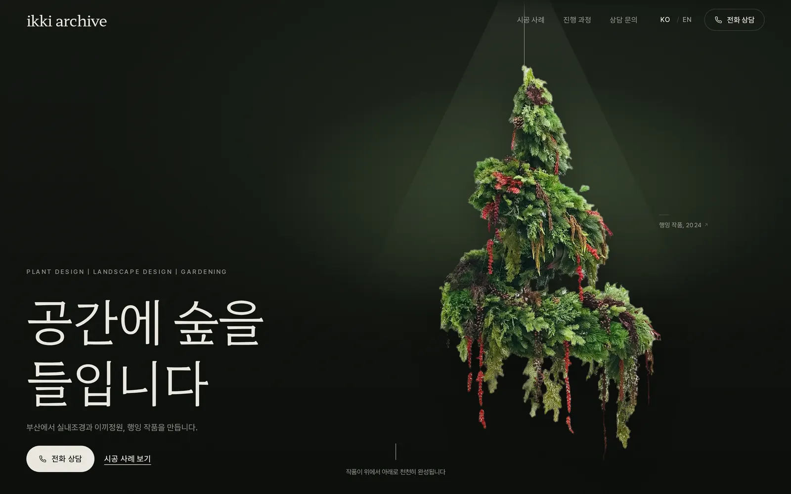
Hero · 첫 화면가져온 자료사진
대표 작품 한 점과 한 문장. 무엇을 하는 곳인지 첫 화면에서 바로 보입니다.
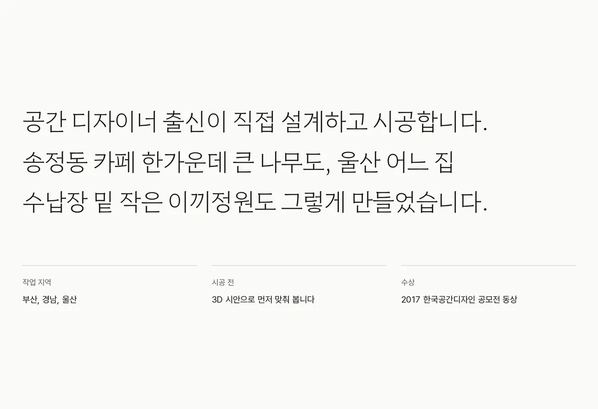
공간 디자이너 출신이라는 배경과 작업 지역, 수상 이력을 첫 문단에 놓았습니다.
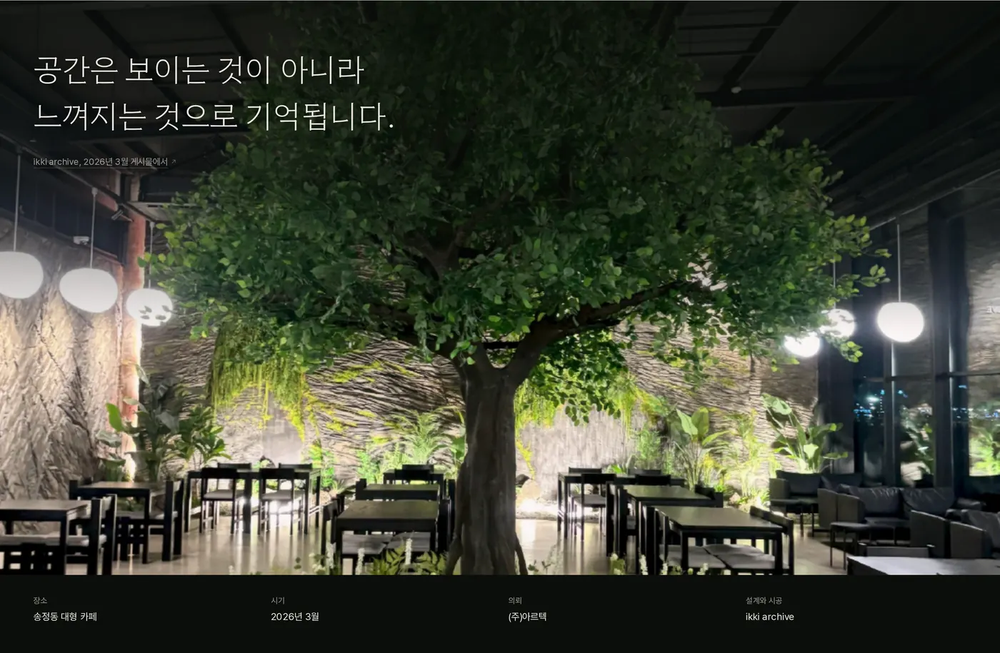
대표 프로젝트 하나를 크게. 장소, 시기, 의뢰처, 설계와 시공까지 함께 적었습니다.
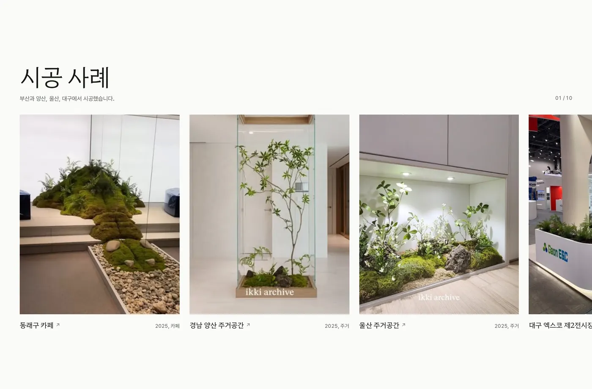
시공 사례 10건. 지역과 연도, 공간 유형을 붙여 한 줄로 모았습니다.
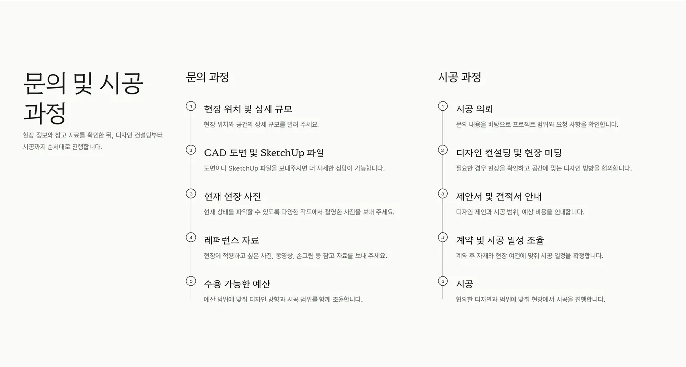
문의 과정과 시공 과정을 나눠, 상담 전에 무엇을 준비하면 되는지 알려줍니다.
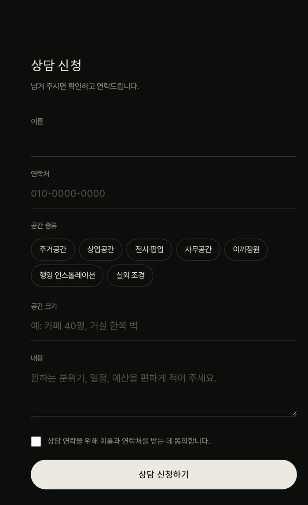
Contact · 상담 동선가져온 자료새로 설계
전화 상담, 인스타그램 DM, 상담 신청서를 한 자리에 두었습니다. 신청서에서는 공간 종류와 크기를 먼저 받습니다.
06 / RESULT
무엇이 달라졌나
흩어진 작업물이
하나의 주소 안에 모였습니다.
프로젝트뿐 아니라 대표의 철학과 작업 방식까지, 처음 보는 고객이 한 흐름으로 확인할 수 있게 됐습니다.
- 주소
- ikkiarchive.com
- 구성
- Projects · About · Process · Contact
- 시공 사례
- 10건 — 지역, 연도, 공간 유형 표기
- 문의
- 전화 상담 · 인스타그램 DM · 상담 신청서
이 사례에는 매출이나 문의 증가 같은 수치를 적지 않았습니다. 확인된 수치가 없기 때문입니다. 대신 실제로 만들어진 결과물을 그대로 보여드립니다.
07 / FINAL
이 사례가 말하는 것
없던 것을 만들어낸 것이 아니라,
이미 있었지만
제대로 보이지 않던 것을
정리했습니다.